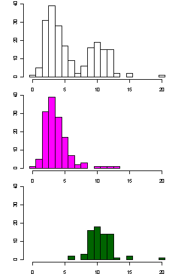
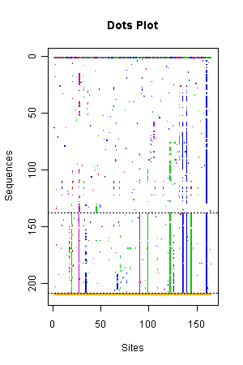

#### EIAV -- Equine Infectious Anemia Virus, an example of DNA data</font></b>
The R script
(<a href="./ex_eiav.r" target="_blank">ex_eiav.r</a>)
demonstrates functions to read two files,
<a href="../example/pony524.txt" target="_blank">pony524.phy</a>
in <code>PHYLIP</code> format and
<a href="../example/pony625.txt" target="_blank">pony625.fas</a>
in <code>FASTA</code> format, and
visualize mutations. It simply runs the <code>phyclust()</code>
by two clusters with a default setting
- Both data sets are available in <code>phyclust</code> and NCBI database,
and original from Baccam, P., et al. (2003).
- The left picture shows the histograms of the number of mutations with respect
to the center of the first cluster.
1. The x-axis is the number of mutations, and the y-axis is the counts.
2. The top plot uses all 208 sequences;
the middle plot uses the 137 sequences in the first cluster; and
the bottom plot uses the 71 sequences in the second cluster.
3. At least two clusters can be expected.
- The right picture shows the mutations of 165 segregating sites,
out of 405 sites, in two clusters.
1. Colored dots represent mutation types
and sites with respect to the first sequence of the first cluster,
the only one sequence drawn entirely.
2. The first cluster may be able to split into several clusters.
3. The second cluster tends to be having more mutations than the first cluster
in the segregating sites from 1 to 50 and 110 to 150.
<center>
<table>
<tbody>
<tr>
<td> </img> </td>
<td> </img> </td>
</tr>
</tbody>
</table>
</center>
---
<div w3-include-html="../preamble_tail_date.html"></div>